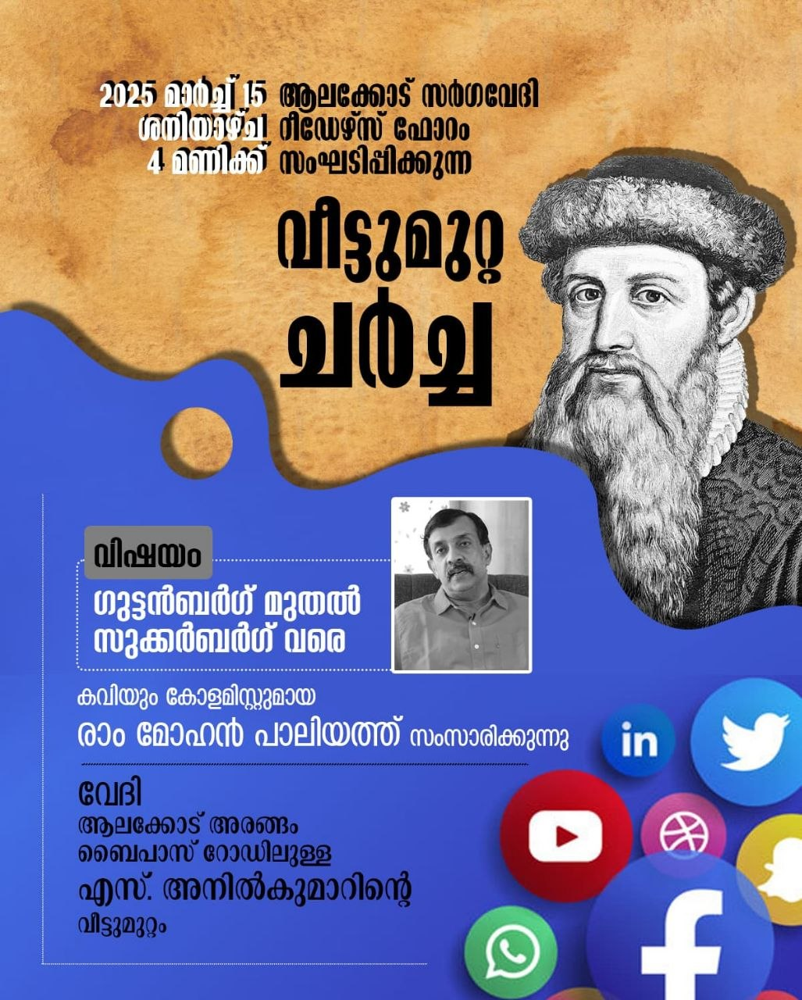
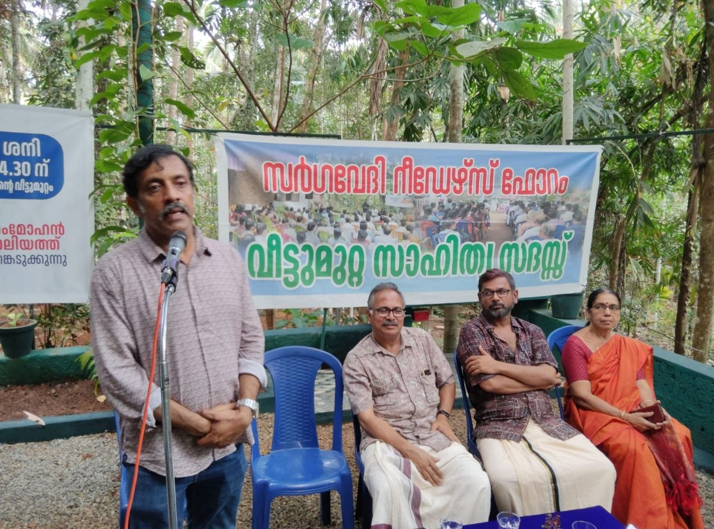
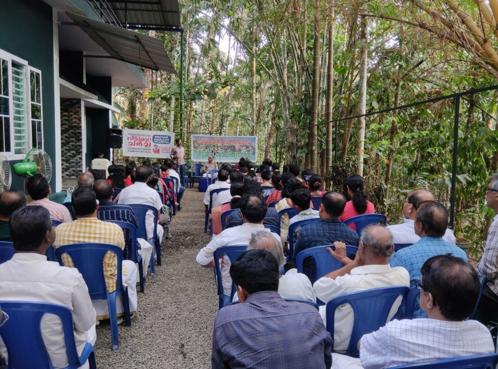
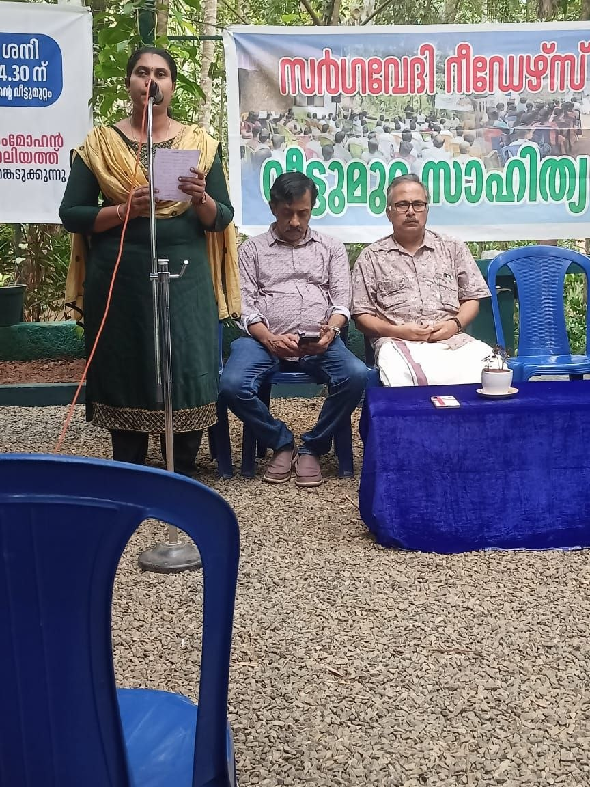
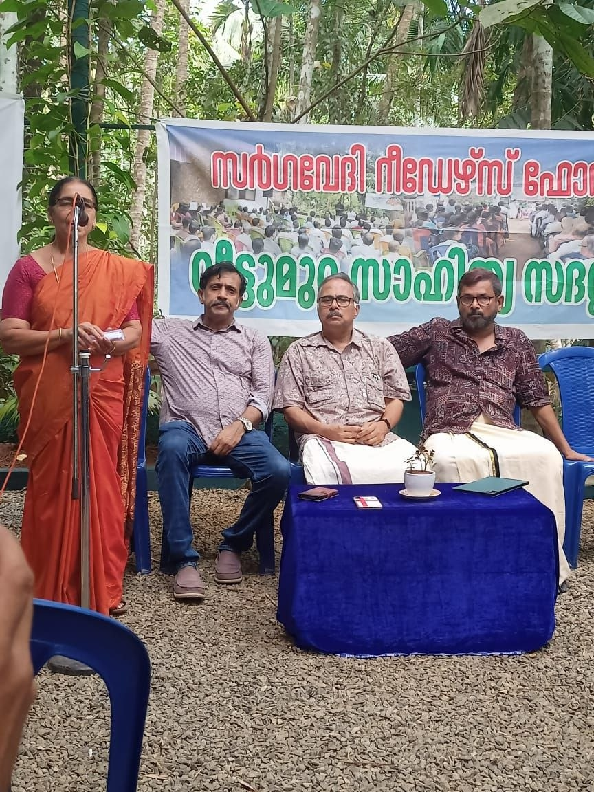
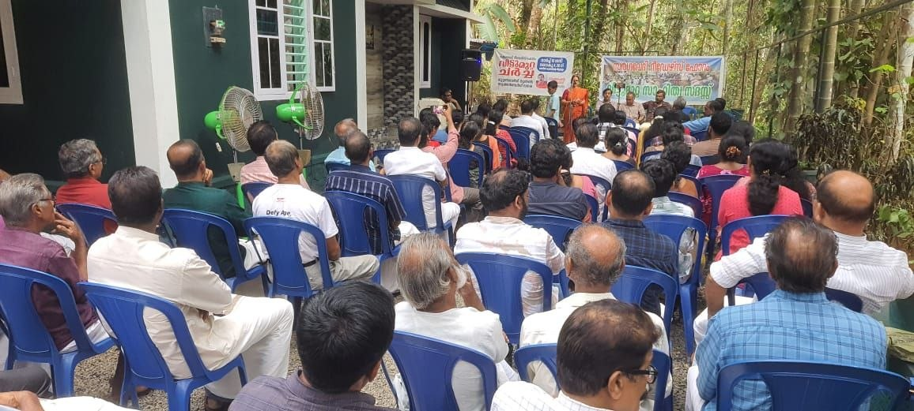
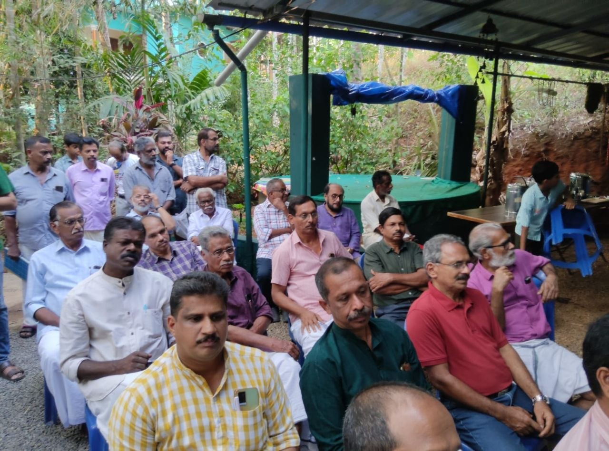
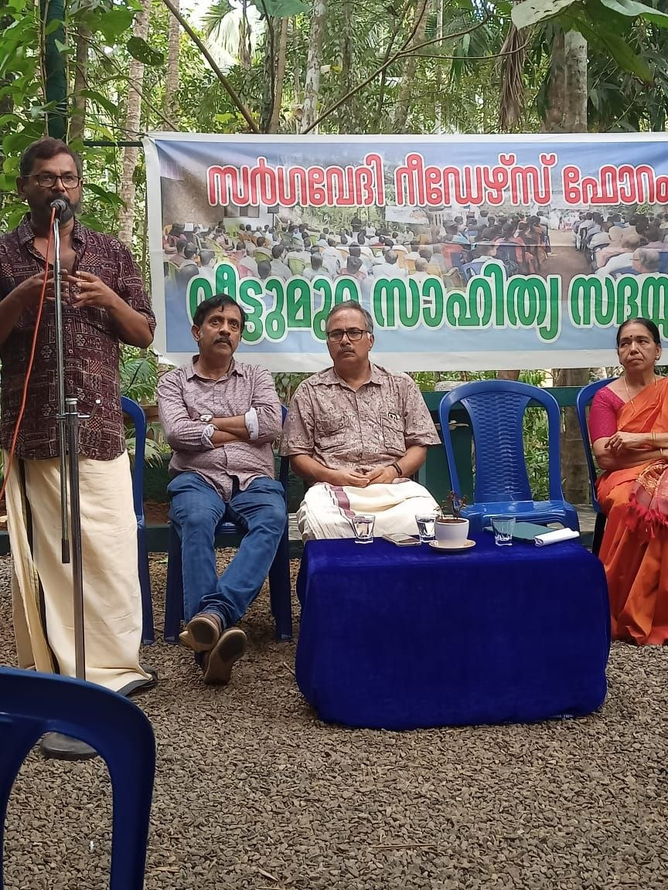
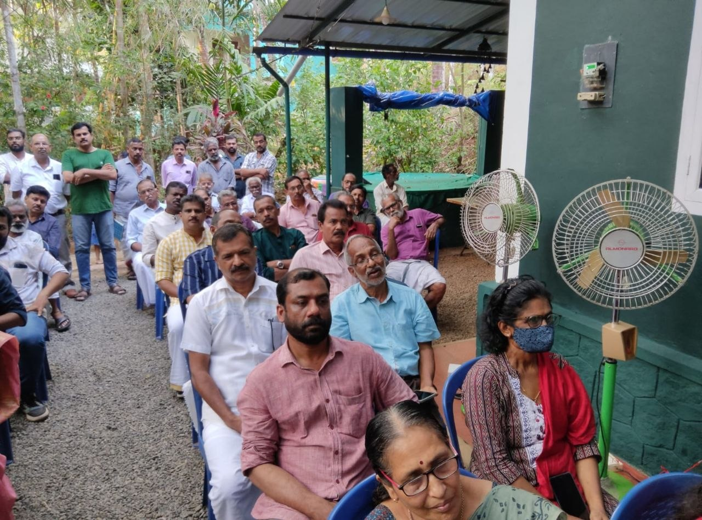
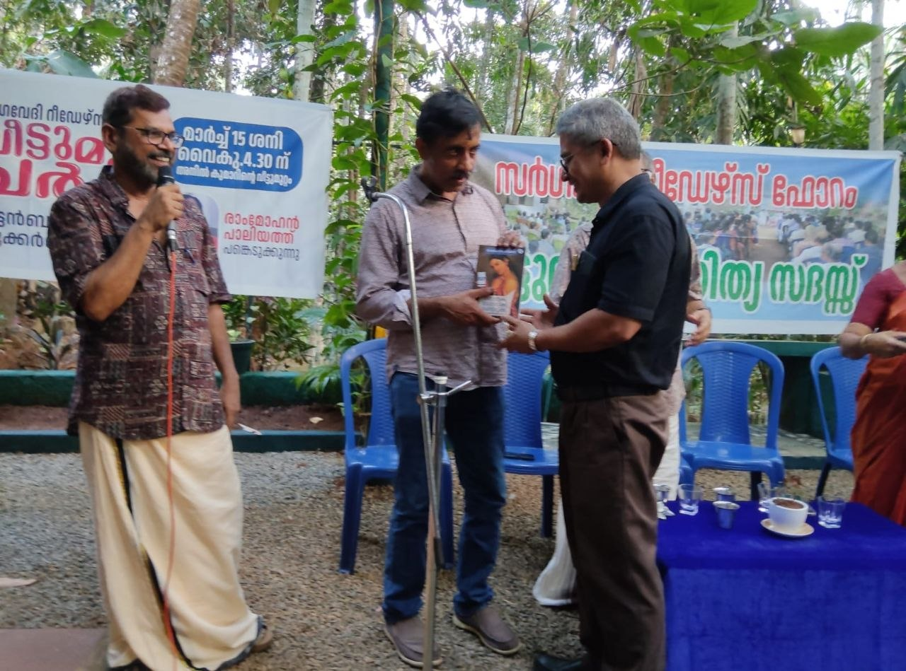
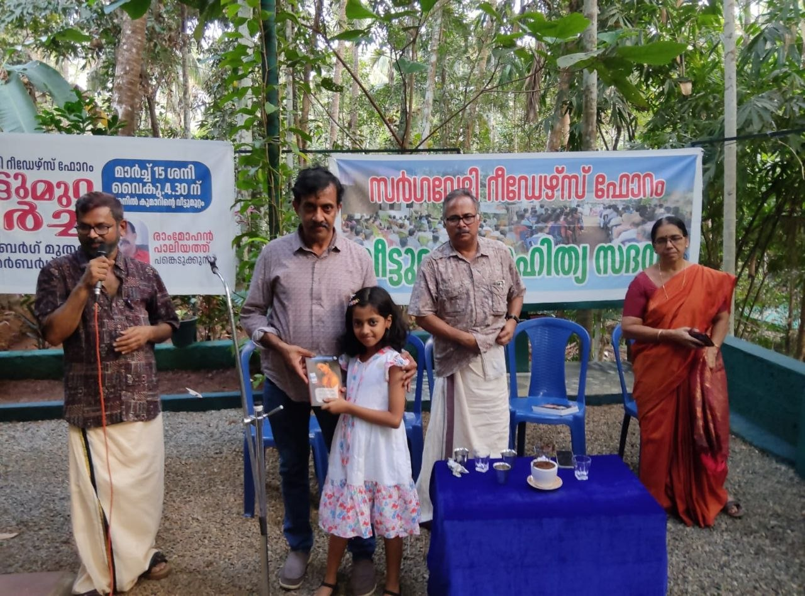
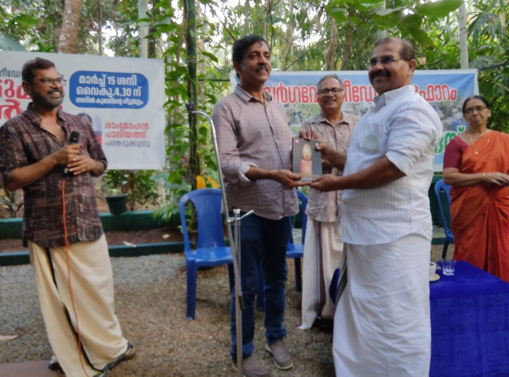
എൻ്റെ ബി.എഡ് പഠനകാലത്ത് വയനാട്ടിൽ കെ.ജെ.ബേബി സർ (മാവേലി മൻ്റം) നടത്തിയിരുന്ന കനവ് സന്ദർശിക്കാനിടയായി. നിറയെ ഇല്ലിക്കാടും ചെല്ലക്കാറ്റും കിന്നാരം പറഞ്ഞിരുന്ന ഒരിടം. ആ നല്ലോർമ മനസ്സിലേക്ക് ഓടിയെത്തി ഇന്നലത്തെ വീട്ടുമുറ്റത്തു വന്നപ്പോൾ. ചായയക്കും ഉള്ളി വടക്കും സ്നേഹ സൗഹൃദങ്ങൾക്കും നന്ദി.
പ്രപഞ്ചം അനാദിയാണ് (ശാസ്ത്രീയ കണക്കുകൾ നിൽക്കട്ടെ.) എന്ന വിശ്വാസം പോലെ പുതിയ കാലത്തെ വാക്കും എവിടെയും തുടങ്ങുന്നു; മുന്നറിയിപ്പില്ലാതെ നിൽക്കുന്നു.
കുറെയേറെ ശ്ലഥബിംബങ്ങളിലൂടെയാണ് രാം മോഹൻ സർ സംഭാഷണം ആരംഭിച്ചത്. നമ്മുടെ ആലക്കോട് തമ്പുരാന്റെ ബന്ധു മോഹനവർമ്മസാറുമായുള്ള സായാഹ്ന സൗഹൃദം ഓർമ്മിച്ചെടുക്കുന്ന വേളയിൽ രാം മോഹൻ സാർ ഒരു റം മോഹൻ സാർ ആവുമോ എന്നും എനിക്ക് തോന്നി.
പണ്ട് വേദങ്ങൾക്കെല്ലാം ഒരു മറ ഉണ്ടായിരുന്നു (വേദം = അറിവ്). സത്യത്തിന്റെ മുഖം വികൃതം എന്നതുകൊണ്ട് ആവാം അത്. എന്നാൽ ഇന്നലെ വിഷയാവതാരകൻ ഒരു മറയുമില്ലാതെ ചില വിഷയങ്ങൾ അവതരിപ്പിച്ചു എന്നതാണ് വ്യത്യസ്തത. ഈ എഴുത്തുകാരനിൽ ഈ നാട് തന്നെ മിഴിച്ചു നിൽക്കുന്നതാവാം കാരണം. അത് അദ്ദേഹത്തിന്റെ കുറ്റമല്ല. സോഷ്യൽ മീഡിയ എന്ന മാധ്യമം പോസ്റ്റ് മോഡേൺ എന്നതിനുമപ്പുറം കയറോ കടിഞ്ഞാണോ ഇല്ലാത്ത ഒന്നായിട്ടാണ് ചിലപ്പോഴെങ്കിലും എനിക്ക് തോന്നിയിട്ടുള്ളത്. ആ മാധ്യമങ്ങളുടെ മുഖമാകുന്ന എഴുത്തുകാരൻ അതിന്റെ ഭാഷ ഉപയോഗിക്കുക എന്നത് സ്വാഭാവികം മാത്രമാണ്.
ഞാൻ മതവിശ്വാസി അല്ലാത്ത ടെമ്പിൾ ഗോയിങ് ആയ ഇടതുപക്ഷ സഹയാത്രികൻ പോലുമല്ലാത്ത എന്നാൽ എൽഡിഎഫിനു മാത്രം വോട്ട് ചെയ്യുന്ന ഇടയ്ക്ക് മാതൃഭാഷയ്ക്ക് പകരം ഇംഗ്ലീഷ് ഉപയോഗിക്കേണ്ടിവരുമ്പോൾ ശരിയായി മലയാളഭാഷ ഉപയോഗിക്കാൻ അറിയാത്ത എന്നൊക്കെ തന്നെക്കുറിച്ച് തന്നെ രാം മോഹൻ സാർ അവതരിപ്പിച്ചപ്പോൾ ഒരു ശരാശരി മലയാളിയുടെ പ്രതിപുരുഷൻ തന്നെയോ ഇതെന്ന് എനിക്ക് തോന്നിപ്പോയി.
ഇനി അല്പം മദ്യം ആവാം, ഇനി അല്പം കറുപ്പാവാം, പണ്ട് പെൺകുട്ടികൾക്ക് ഉൾപ്പെടെ അത് ഉപയോഗിക്കുന്നതിന് ലൈസൻസ് നൽകിയിരുന്നു തുടങ്ങിയ പരാമർശവും ശ്രദ്ധിച്ചു.
കള്ളും കഞ്ചാവും ദൈവത്തിനു ഇടയ്ക്ക് അത് എടുത്ത് അല്പം മോന്തി പുലഭ്യം പറയുന്ന ഇരുണ്ട യുഗത്തിൽ നിന്നാണ് നാം വെളിച്ചത്തിലേക്ക് വന്നത്. ആ വെളിച്ചത്തിൽ നിന്നും ഇരുട്ടിലേക്കോ എന്ന ഭീതിയും (എന്റെ മാത്രം ഭീതിയാവാം) എനിക്കുണ്ടായി. പിന്നെ അല്പം സമാധാനം ഉള്ളത് സ്വന്തം കാര്യം നോക്കാൻ പ്രാപ്തിയുള്ള പുതിയ തലമുറയെ ഓർത്താണ്. അവരാണെങ്കിൽ ഭൂരിപക്ഷം പേരും ഗൃഹാശ്രമം ഒഴിവാക്കി വാനപ്രസ്ഥത്തിൽ കടന്നെങ്കിലും വനമില്ലാത്തതിനാൽ ന്യൂക്ലിയർ ഫാമിലിയിലെ സെപ്പറേറ്റ് റൂമിൽ ഏകാന്ത വാസത്തിലുമാണ്.
രാം മോഹൻ സാറിന്റെ ഓരോ വാക്കും ഓരോ കുത്ത് ആയിരുന്നു. അത് അവസാനത്തേതാണെന്ന് എനിക്ക് അഭിപ്രായമില്ല. കഥയെഴുത്ത് മത്സരത്തിൽ പങ്കെടുത്ത മത്സരാർത്ഥിയെ ജീവിതസഖിയാക്കി. കഥ കൂടെപ്പോന്നപ്പോൾ കഥയെഴുത്തു നിർത്തി. (അങ്ങനെ ഇടയ്ക്കുള്ള നർമ്മത്തിന്റെ കടന്നുവരവിന് ഞാൻ കാതോർത്തു) കൂടുതൽ പറയാൻ സ്ഥലപരിമിതി അനുവദിക്കുന്നില്ല. സത്യം മരിച്ച ഇക്കാലത്ത് അധികാരി വർഗ്ഗത്തെ കാര്യം പറഞ്ഞ് ബോധ്യപ്പെടുത്താൻ ഒരാളില്ല എന്നതാണ് ഇന്നത്തെ ദുരന്തം. അവിടെ റാം മോഹൻ പാലിയത്തിനെ പോലുള്ളവരുടെ വിലയേറുകയാണ്. ഇടയ്ക്ക് പ്രോഗ്രാം അവതരിപ്പിച്ച ഓരോരുത്തരും അവരുടെ മികവുകൊണ്ട് നമ്മുടെ കൂട്ടായ്മയുടെ ശക്തി വർധിപ്പിച്ചു.
എല്ലാവർക്കും ഒത്തിരി സന്തോഷം സ്നേഹം - പ്രത്യേകിച്ച് സംഘാടകർക്ക്.
ലല്ലലല്ലം പാടി വരുന്ന കാറ്റിൻ നാദവുമായി മുളങ്കൂട്ടങ്ങൾ അതിരിട്ട ഒരു പച്ച വീടും പച്ചയായ മനുഷ്യരും ചേർന്ന് ഒരുക്കിയ വീട്ടുമുറ്റം കേൾവിയുടെയും ചർച്ചയുടെയും സൗഹൃദങ്ങളുടെയും ഒരു നൻ മുറ്റമായി മാറി.
കുടിയേറ്റം, സാഹിത്യം, വെബ് ഇങ്ങനെ പല വിഷയങ്ങളെ കേർത്തിണങ്ങി അച്ചടി മുതൽ വിരലടി (വിരലടി എന്നത് പെട്ടെന്ന് ഒരു പദം മനസ്സിൽ വന്നതാണ് വിരൽ കൊണ്ട് തോണ്ടിയോ ടൈപ്പിയോ ആണല്ലോ സൈബർ ടെക്സ്റ്റുകൾ അതുകൊണ്ട് അവയെ അച്ചടിക്ക് പകരം ഒരു പദമായി വിരലടി എന്ന് പ്രയോഗിച്ചതാണ്) വരെയുള്ള കാലത്തെ റാം മോഹൻ സാർ ഗംഭീരമായി അവതരിപ്പിച്ചു. ബോറടിപ്പിക്കാത്ത സംസാരം ആയതിനാൽ കേൾവിക്ക് ഇടയ്ക്ക് ഫോൺ തോണ്ടാൻ തോന്നിയതേ ഇല്ലേ.
ഇന്നത്തെ സ്വാഗതവും നന്ദിയുമൊക്കെ പരിപാടിയെ വേറിട്ടതാക്കി എന്നതിൽ സംശയമില്ല.
ഇടവേളയെ ഗംഭീരമാക്കിയ പാട്ടുകളും നന്നായി.
അവതരണത്തിനും ചായയ്ക്കും പാട്ടിനും ഒക്കെ ശേഷം നടന്ന ഇൻ്ററാക്ഷനും നന്നായി. ചർച്ചയിൽ പങ്കെടുത്തവരൊക്കെ നല്ല ഇടപെടലുകളും ചോദ്യങ്ങളും ആയിരുന്നു.
റാം മോഹൻ സാറിൻ്റെ മറുപടി ഓരോരുത്തരെയും ഓരോ ചോദ്യത്തെയും കൃത്യമായും ഹൃദ്യമായും പരിഗണിച്ചുള്ളതായിരുന്നു.
എന്തൊക്കെ ആയാലും വീട്ടുമുറ്റത്ത് നിന്നിറങ്ങുമ്പോൾ നല്ല ചില അറിവുകളും അനുഭവങ്ങളും ബാക്കിയായി.
സംസാരിക്കാൻ ധാരാളം പേർ ഉണ്ടായിരുന്നുവല്ലോ സാർ... രണ്ടുമൂന്ന് ഇന്റർവ്യൂ ഒക്കെ കണ്ട് ഞാൻ ചോദിക്കാൻ കരുതി വച്ച ചോദ്യങ്ങളുടെ ഉത്തരം അദ്ദേഹത്തിന്റെ ഭാഷണത്തിൽ പരാമർശം ഉണ്ടായിരുന്നു. അത് വീണ്ടും ചോദിക്കുന്നത് ശരിയല്ലല്ലോ. പിന്നെ കാതലുള്ള ഒരു ചോദ്യം കണ്ടുപിടിക്കാനും കഴിഞ്ഞില്ല.
എന്തായാലും ഇന്നലത്തെ പരിപാടി വലിയ വിജയമായിരുന്നു. വരാമെന്ന് പറഞ്ഞ മൂന്നു പേര് സമയമായപ്പോൾ വരില്ലെന്നറിയിച്ചു. പിന്നെ മകളെ ജോലസ്ഥലത്തു നിന്ന് നിർബന്ധിച്ചു നേരത്തെ വിളിച്ചു വരുത്തി കൂടെ കൂട്ടി.
പ്രിയപ്പെട്ട യശോദടീച്ചറുടെ സ്വാഗത പ്രസംഗം മുഖ്യാതിഥിയുടെ പ്രഭാഷണത്തോട് ചേർന്ന് നിൽക്കും വിധം സുന്ദരമായിരുന്നു. സ്നേഹമസൃണമായ വാക്കുകളും സരസപദങ്ങളും ചേർത്ത് നാം അദ്ദേഹത്തെകുറിച്ച് കേട്ടിട്ടുള്ള കാര്യങ്ങളെല്ലാം ഉൾപ്പെടുത്തി നന്നായി സംസാരിച്ചു.❤️
റാംമോഹൻ സാറും അങ്ങനെ തന്നെ. ഇത്രയും പ്രഗത്ഭനായ ഒരാളുടെ പ്രഭാഷണശൈലി ഇത്ര ലളിതമായിരിക്കുമെന്ന് പ്രതീക്ഷിച്ചിരുന്നില്ല. എന്നാൽ പറയേണ്ട കാര്യങ്ങൾ ഗംഭീരമായും പ്രധാന്യത്തോടെയും അവതരിപ്പിക്കുകയും ചെയ്തു. (അദ്ദേഹത്തിന്റെ ശരീരഭാഷയിൽ പോലും ആ ലാളിത്യമുണ്ടായിരുന്നു. ഫോട്ടോ ശ്രദ്ധിച്ചാൽ മനസ്സിലാവും). അറിയാൻ ആഗ്രഹിച്ച കാര്യങ്ങളെ കുറിച്ചെല്ലാം സൂചനയുണ്ടായിരുന്നു മറുപടി പ്രസംഗത്തിലും. ഒരാളുടെ ചോദ്യവും വിട്ടുപോകാതെ തൃപ്തികരമാംവിധം.
ചോദ്യങ്ങൾ ചോദിച്ചവരും വളരെ സീര്യസായി ഉള്ള ഇടപെടലാണ് നടത്തിയത്. പാട്ടുകളും ചായയും മനോഹരമായ ചുറ്റുപാടും ആസ്വദിച്ചുകൊണ്ടു നല്ലൊരു സായാഹ്നം കടന്നുപോയതിന്റെ സന്തോഷം ഒരു ദിവസം കൊണ്ട് തീരുന്നതല്ല. പതിവിലും നേരത്തെ തന്നെ വെയിലുംചൂടും പിൻവാങ്ങി അവിടുത്തെ പച്ചപ്പിനിണങ്ങുന്ന സുഖശീതളമായ ഒരന്തരീക്ഷം പ്രകൃതയുമൊരുക്കി. അനിൽ സാറിനും കുടുംബത്തിനും മറ്റു സംഘാടകർക്കും ഒത്തിരി നന്ദി.
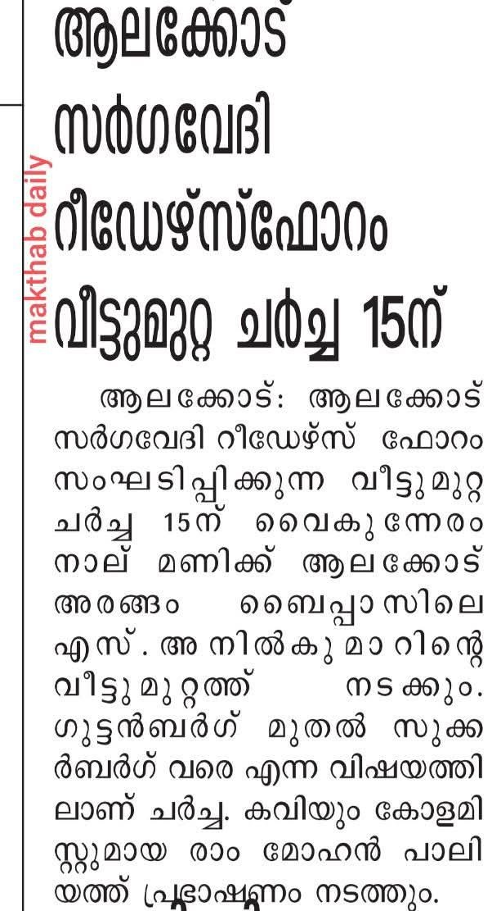
ദേശാഭിമാനി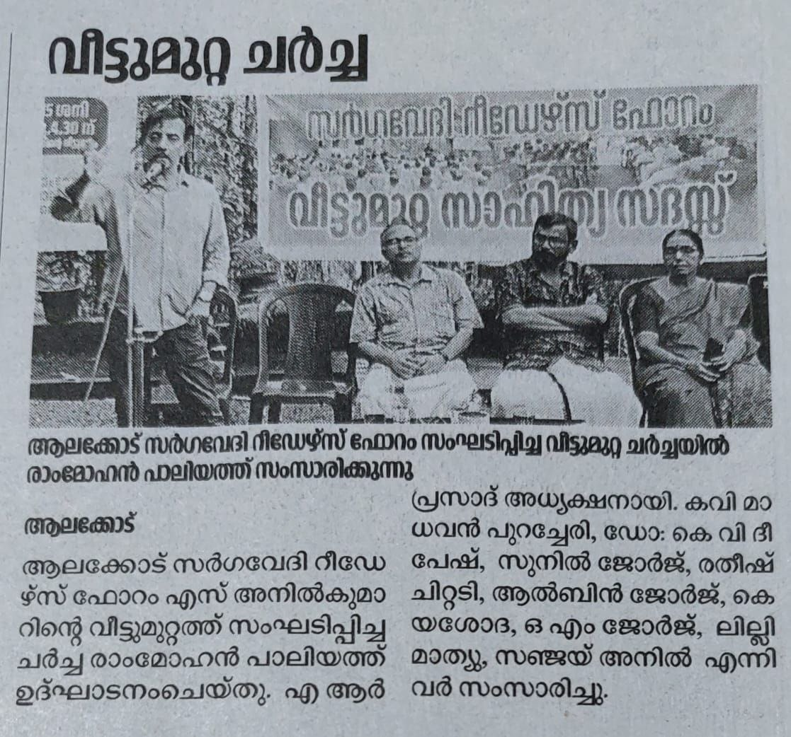
മാതൃഭൂമി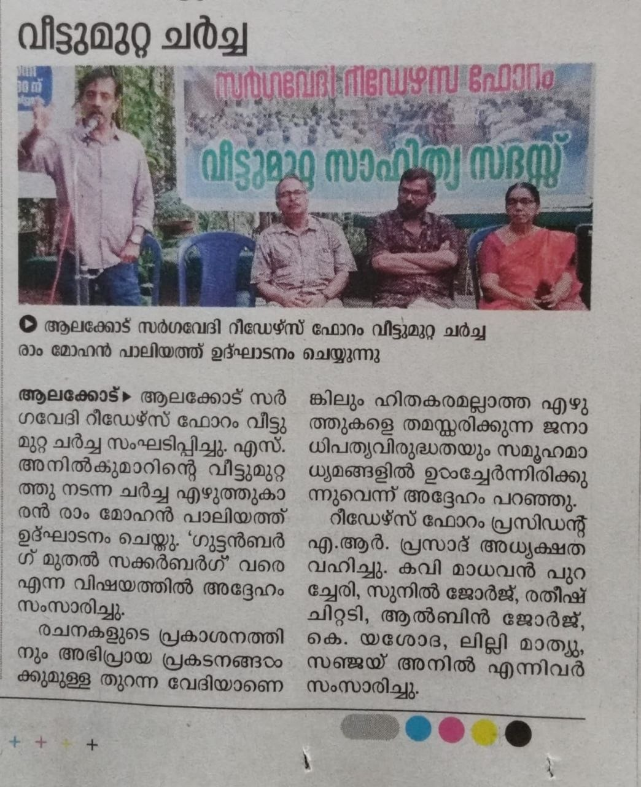
മക്തബ്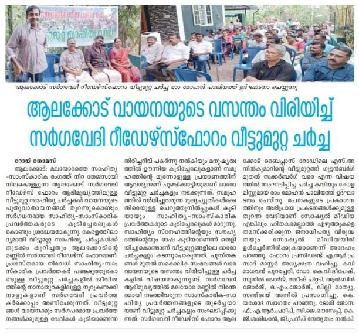